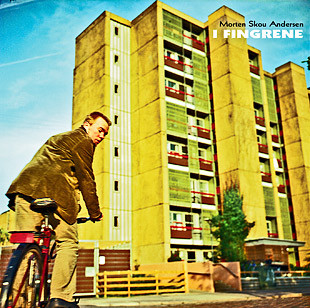

Morten Skou Andersen
I fingrene
1. oktober 2007
Cd (MSA1IF)
Udgivet på National Masterpiece Library
Udgivet med støtte fra Kunstrådet
Cd’en kan købes ved at skrive på Facebook, Discogs (til Dixen86) eller sende en mail:
mortenogdemennesker@gmail.com
Anmeldelser
“I Fingrene er leveret med mere glimt i øjet end alle tresser-forgængerne præsterede tilsammen.” (Gaffa)
„Det er en jammerlig omgang hø og hakkelse.” (Jydske Vestkysten)
Numre
1 Det er blevet alvorligt
2 Åh Pia baby
3 Tsunami-året
4 Tænk hvis for eksempel koreanerne fik våben der kunne matche USA’s
5 Det er ikke fordi vi ikke går ind for integration
6 Når den dumme krig er færdig
7 Deus ex machina (Rigtig i hovedet)
8 Tidlig nat
9 At have en mening
10 De grå
11 Da jeg var omkring de tyve
12 Fremtiden
13 Til Line
Tekst og musik af Morten Skou Andersen.
Morten Skou Andersen: akustisk guitar og sang.
Optaget, mikset og mastereret af Simon Gylden.